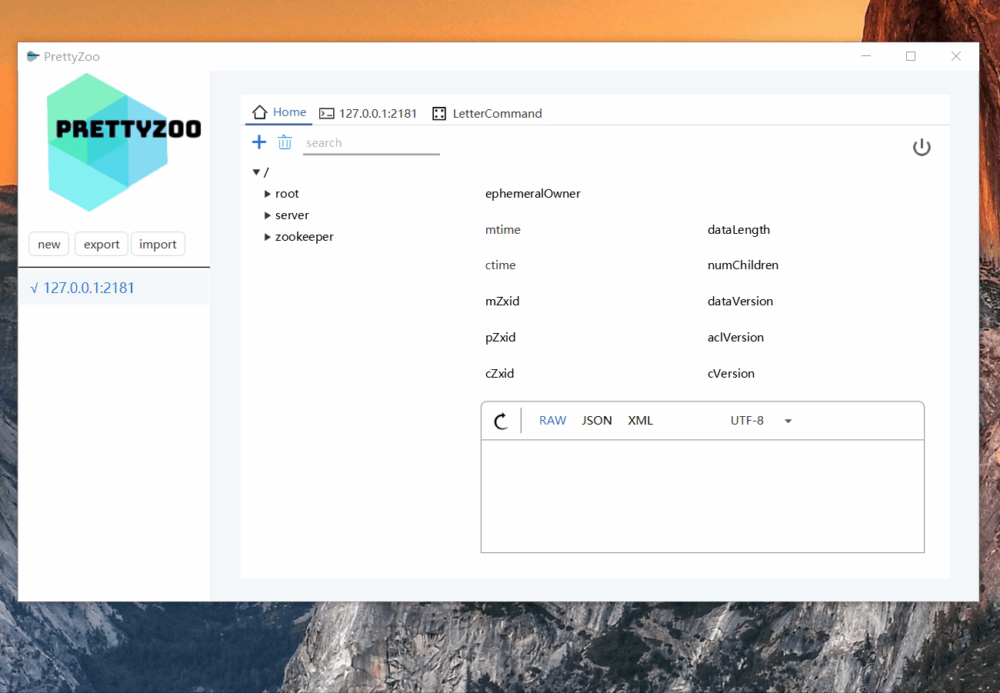

前言
虽然市面上 Zookeeper 的 WEB 管理工具很丰富，但是却很难找到一款满意的图形化客户端。
鉴于这样的情况，我就自己开发了一款用于管理 Zookeeper 的图形化工具，取名 PrettyZoo，意为：Pretty nice Zookeeper GUI。
PrettyZoo 是一个基于 JavaFX 和 Apache Curator 实现的 Zookeeper 图形化工具，该项目完全开源，可以通过 Github 主页查看。
它拥有众多个性化的功能，比如
- 支持 Mac / WIndows / Linux 多平台
- 支持 SSH-Tunnel 连接
- 节点 CRUD （增删改查）
- 节点数据 pretty format，目前支持 JSON、XML
- 支持命令行操作（80% 的命令都支持了）
- 支持 4-letter command
- ……
下面多图预警
安装
得益于 Java 的跨平台特性， PrettyZoo 天然就支持 Windows / Mac / Linux 等多平台，再加上使用了 Jigsaw（模块化） 和 JPackage 等众多新特性，用户无需再独立安装 JRE 即可运行。
安装包的下载地址（可能需要梯子）, 记得选择系统匹配的安装包
- Windows：prettyZoo-win.msi
- Mac: prettyZoo-mac.dmg
- Linux: prettyZoo-rpm / prettyZoo.deb
注意 1 ：由于当前版本 JPackage 的一个 Bug，软件的安装路径最好是全英文路径，不要有非 Unicode 字符，否则会出现运行无反应的情况
注意 2 ： MAC 用户安装 dmg 时可能会提示 已损坏，无法打开， 这是因为我没有加入 Apple 的开发者认证（认证需要 99 美元 / 年， 而我毕竟不是专业的 mac 、 ios 开发者），可以参考该解决方案。
使用
创建连接
Zookeeper 连接的创建很简单，点击左边菜单的 new 按钮就会跳转到连接配置页面。
该页面只有 server 这一项是必填的，填写规则是 连接:端口号 ，填写完成以后点击右下角的 save 按钮就可以保存了。
如果填写了别名，那么会以别名在列表里面展示，否则就展示连接地址信息
SSH-Tunnel 配置
要配置 SSH-Tunnel 的话，需要先勾选 Use SSH Tunne 复选框，然后再填写配置信息
连接和断开
连接和断开的操作很简单，这里就直接展示 GIF
节点 CRUD
连接成功以后就会默认进入节点展示页面，在该页面可以执行 CRUD 操作。
通过点击 + 号可以进入节点创建页面, 在该页面
- 可以选择节点的类型，如 Sequence 或 Ephemeral
- 填写节点数据
如果想递归的创建多层节点，只需要使用 / 符号进行分割即可
Zookeeper 节点元数据中的 mtime / ctime 默认是时间戳格式， PrettyZoo 会将其转换为 yyyy-MM-dd HH:mm:ss 格式， 如果需要切换的话可以通过点击 mtime / ctime 标签进行
删除功能这里就不再演示了，点按钮进行二次确认就可以删除了。
通常存放在 Zookeeper 节点中的数据都是压缩过了的，为了便于阅读，PrettyZoo 提供了 Json 和 Xml 格式的 Pretty Format 功能。
如果节点数据出现乱码的话， 还可以通过切换编码修复

通常框架注册的节点数都很大，所以一个好用的搜索功能是非常有必要的，新版的 PrettyZoo 使用了改造后的 Trie 结构来实现节点搜索，使得查询速度和精准度都比上一个版本有了很大的提升。
匹配的关键词会高亮显示，双击可以轻松定位到原始位置
命令行操作
如果只是在 GUI 的用鼠标点点点，那么机械键盘的存在感将会大打折扣。为此， PrettyZoo 特意支持了命令行操作，基本上覆盖了 80% 的命令参数。
连接成功后，在节点信息页面点击 命令行 Tab 就会自动启动一个命令行会话，在会话窗口可以输入命令按回车执行。
如果觉得命令内容过多，可以执行 clear 命令清空面板
对于命令行的高亮的话，这个已经列入了未来规划中了。
4 Letter command
如果你不了解 4 Letter command 的话，可以先参考一下官方文档。
如果要使用 4-Letter-Command 的话，需要在配置中加上
4lw.commands.whitelist=*
* 代表所有命令都支持，也可以替换为特定的命令，多个用逗号分隔
4lw.commands.whitelist=stat, ruok, conf, isro
在 PrettyZoo 中使用 4-Letter-Command 只需要切换到对应的 Tab 页即可，操作与命令行窗口一致
我官方支持的 command 及其对应的作用收集成了一个表格
| Command | Description |
|---|---|
| conf | New in 3.3.0: Print details about serving configuration. |
| cons | New in 3.3.0: List full connection/session details for all clients connected to this server. Includes information on numbers of packets received/sent, session id, operation latencies, last operation performed, etc… |
| crst | New in 3.3.0: Reset connection/session statistics for all connections. |
| dump | Lists the outstanding sessions and ephemeral nodes. This only works on the leader. |
| envi | Print details about serving environment |
| ruok | Tests if server is running in a non-error state. The server will respond with imok if it is running. Otherwise it will not respond at all. |
| srst | Reset server statistics. |
| srvr | New in 3.3.0: Lists full details for the server. |
| stat | Lists brief details for the server and connected clients. |
| wchs | New in 3.3.0: Lists brief information on watches for the server. |
| wchc | New in 3.3.0: Lists detailed information on watches for the server, by session. This outputs a list of sessions(connections) with associated watches (paths). Note, depending on the number of watches this operation may be expensive (ie impact server performance), use it carefully. |
| wchp | New in 3.3.0: Lists detailed information on watches for the server, by path. This outputs a list of paths (znodes) with associated sessions. Note, depending on the number of watches this operation may be expensive (ie impact server performance), use it carefully. |
| mntr | New in 3.4.0: Outputs a list of variables that could be used for monitoring the health of the cluster. |
未来
由于我也是初次接触 JavaFX，整个过程也是一边学一边开发，很多细节的地方都还没有处理好，只能都列入未来规划中了
-
支持国际化
-
支持字体大小的调整
-
支持节点数据高亮展示
-
支持命令行高亮展示
-
……
如果你有好的建议或需求，欢迎通过 ISSUE 的方式提给我。
最后再为自己拉个票吧，开源不易，欢迎到 Github 给个 star 鼓励一下。

更多
- 推荐一款神仙颜值的 ZooKeeper 客户端工具，By 芋道源码
- 《HelloGitHub》第 57 期, By HelloGithub
- 我是如何开发了一款‘有人用’的开源软件, By Vran
- 高颜值 Zookeeper 图形化客户端, By OSChina